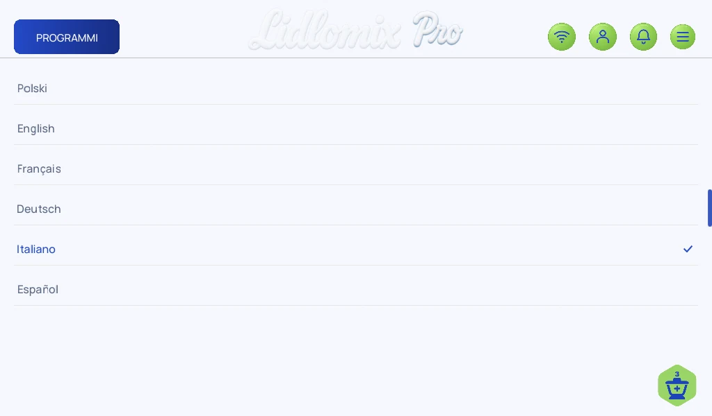

Installare Lidlomix Pro su Connect passo dopo passo
Questa guida riguarda l’installatore USB per Monsieur Cuisine Connect su Windows. Prepara il computer, il pacchetto di installazione e il cavo di servizio.
Cosa preparare
- Prepara il tuo Monsieur Cuisine Connect. Prima di apportare modifiche, il programma verifica che il robot sia compatibile con il pacchetto.
- Ti servono un computer con Windows 10 o 11 e .NET Framework 4.8, il pacchetto di installazione completo e spazio per i cataloghi di ricette.
- Prepara un inserto o un cacciavite Torx TT10 per la vite dello sportello.
Cavo di servizio USB-A
Per la porta di servizio Android USB di Connect usa un cavo adatto a questo collegamento, con due connettori USB-A maschio identici. Se il computer è accanto al robot, bastano 0,5 m. Un cavo da 1 m lascia più margine.

I test su Monsieur Cuisine Smart e sugli altri modelli sono ancora in corso. Il supporto di questi dispositivi è previsto e resta da confermare.
Installazione via USB
Estrai il pacchetto
Estrai tutto lo ZIP in una cartella del computer. Avvia Lidlomix-Pro-Instalator-USB.exe da quella cartella.
Collega il robot al computer
Spegni Connect e scollegalo dalla rete elettrica. Sotto la base, svita la vite con un inserto Torx TT10 e rimuovi lo sportello. Collega il computer alla porta Android USB con il cavo di servizio. Ricollega il robot alla rete elettrica, accendilo, sblocca lo schermo e lascialo a riposo.

Sportello di servizio chiuso sotto la base del Connect. 
Per l’installazione usa solo la porta Android USB indicata dalla freccia. La croce contrassegna la porta Power PCB USB. Avvia l’installatore
Scegli la lingua del programma e fai clic su Avvia. Dopo il riavvio, lascia collegato il cavo mentre il robot carica il menu. Ricollega l’USB quando il programma mostra l’istruzione e il menu è visibile. Se il robot chiede l’autorizzazione al debug USB, confermala sul suo schermo.
Conserva il backup
Prima dell’installazione il programma salva una copia dei file di installazione dell’app originale (APK). Conservala per poter ripristinare l’app originale in caso di problemi. Lascia il cavo collegato finché il programma non conferma che l’installazione è terminata.
Verifica il primo avvio
Controlla che Lidlomix Pro e la schermata di scelta delle app usino la lingua selezionata durante l’installazione. Puoi cambiarla in seguito nelle impostazioni di Lidlomix Pro. Per modificare la schermata iniziale predefinita, apri Schermata Home nelle impostazioni di Android.

Scelta della lingua sul robot

Se l’installazione si interrompe
Il pulsante Kopie i logi (Copie e registri) apre il registro del tentativo e il backup dell’app originale, se è stato creato. Il ripristino completo del sistema richiede una procedura di assistenza. Sul forum indica il modello, la versione di Windows, il numero del passaggio e il messaggio. Rimuovi numero di serie e dati dell’account da eventuali estratti del registro.
Parla dell’installazione sul forum